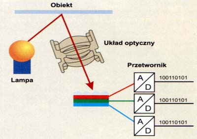

Urządzenia wejścia
Skaner | Aparat cyfrowy
Skaner
Przekształca optyczne informacje na komputerowe dane; za pomocą czujników bada kolor i jasność odczytywanego obrazu; po przekazaniu informacji o obrazie do komputera można je w dowolny sposób modyfikować.
Parametry skanera:
- wielkość obszaru skanowania,
- rozdzielczość optyczna (mierzona w DPI) - gęstość elementów światłoczułych na listwie przesuwanej nad skanowaną ilustracją; im jest ich więcej, tym więcej szczegółów jest w stanie wychwycić; rozdzielczość podawana jest w postaci dwóch liczb (np. 300x600 dpi.); pierwsza z nich odnosi się do liczby elementów skanujących znajdujących się na jednym calu powierzchni elementu; każdy z takich elementów tworzy jeden piksel informacji w osi poziomej; druga liczba oznacza odległość (lub krok), o jaką ramię przesuwa się pomiędzy ekspozycjami. Liczba 600 dpi oznacza więc że każda nowa próbka jest tworzona co 1/600 cala.
- głębia kolorów - ile bitów informacji potrzebnych jest do opisania koloru punktu w standardzie RGB - im większa jest to liczba, tym więcej kolorów skaner potrafi rozróżnić, np.:
GŁĘBIA [bit] ILOŚĆ KOLORÓW
1 2
8 256
16 65 536
24 16 777 216
- rozdzielczość interpolowana - umiejętność sztucznego podwyższania rozdzielczości otrzymywanego obrazu cyfrowego; między wczytane punkty obrazu wstawiane są kolejne, których jasność i kolor wyliczone są przez program na podstawie wartości punktów sąsiednich, zwiększanie rozdzielczości interpolowanej zwiększa wielkość ilustracji, lecz obraz nie zawiera przez to więcej szczegółów.

Zasada działania skanera, źródło PC World Computer.
Aparat cyfrowy
Nie potrzebuje filmu fotograficznego; docierający do niego obraz trafia na matrycę LCD lub CMOS, gdzie jest przetwarzany i zapisywany w postaci cyfrowej (zazwyczaj na karcie pamięci Flash). Najważniejsze parametry:
- rozdzielczość (wielkość matrycy),
- technologia CCD lub CMOS,
- zoom optyczny i cyfrowy.